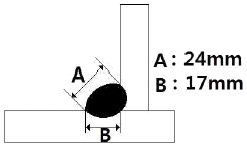
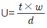
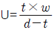
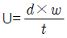
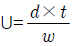

방사선비파괴검사기사 (2014-03-02 기출문제)
1과목: 비파괴검사 개론
1. 초음파탐상시험의 장점이 아닌 것은?
- 결함으로부터의지시를 곧바로 얻을 수 있다.
- 시험체의 한 면만을 이용하여 결함을 측정할 수 있다.
- 내부조직의 입도가 크고 기포가 많은 부품 등의 탐상에 유용하다.
- 침투력이 매우 높아 두꺼운 단면을 갖는 부품의 깊은 곳에 있는 결함도 용이하게 검출한다.
(정답률: 74%)

2. 홀효과를 이용하는 비파괴검사법은?
- 광탄성법
- 전위차시험법
- 형광서머그래피법
- 누설자속탐상검사
(정답률: 62%)
3. 다음 비파괴검사 방법 중 결함의 형상을 추정하기 곤란한 검사방법은?
- 침투탐상검사
- 와전류탐상검사
- 방사선투과검사
- 자분탐상검사
(정답률: 76%)
4. 누설검사를 계획하거나 시방서를 작성할 때 이용할 누설검사의 선택에서 가장 먼저 생각할 점은?
- 검사비용
- 설계압력
- 누설률의 범위
- 추적가스의 선택
(정답률: 56%)
5. 방사선투과시험에서 반가층이란?
- X, γ선이 물질 후면으로 투과되어 나온 방사서느이 강도가 투과되기 전 표면에서의 강도의 반이 되는 물질의 두께이다.
- 방사선과 물질과의 상호작용시 이온화 과정에 의한 흡수가 필름안에서 일어나 이때의 자유전자들이 영상을 흐리게 하는 층을 말한다.
- 방사성 물질이 원래의 크기보다 반으로 줄어들 때의 구분선을 말한다.
- 방사선투과 사진의 질을 점검할 때 표준시험편을 사용하는 데 이의 등급 간의 분류를 말한다.
(정답률: 79%)
6. 일반적으로 특수강에 첨가되는 특수원소의 효과에 대한 설명으로 틀린 것은?
- 질량효과 증대
- 담금성 향상
- 임계냉각속도 상승
- 마텐자이트 변태점 저하
(정답률: 40%)
7. Fe의 비중과 용융점으로 옳은 것은?
- 비중은 2.7이며 용융점은 660℃이다.
- 비중은 7.8이며 용융점은 1538℃이다.
- 비중은 8.9이며 용융점은 1083℃이다.
- 비중은 10.2이며 용융점은 2610℃이다.
(정답률: 66%)
8. 철-탄소 평형상태도에서 공정반응의 온도로 옳은 것은?
- 723℃
- 910℃
- 1130℃
- 1538℃
(정답률: 38%)
9. 충격시험에 대한 설명으로 옳은 것은?
- 충격시험은 정적하중시험이다.
- 강의 인성이나 취성을 알 수 있다.
- 충격시험은 재료에 내부 충격을 주어 피로현상을 측정한다.
- 충격값은 재료에 다중 충격을 주었을 때 발산되는 에너지로 나타낸다.
(정답률: 59%)
10. 다이캐스팅용 재료로 가장 적합한 것은?
- 주강
- 주철
- 특수강
- 아연합금
(정답률: 44%)
11. WC분말과 Co분말을 압축성형한 후 약 1400℃로 소결시켜 바이트와 같은 공구에 이용되는 합금은?
- 초경합금
- 고속도강
- 두랄루민
- 엘렉트론합금
(정답률: 44%)
12. 오스테나이트계 스테인리스강의 특성에 관한 설명 중 틀린것은?
- 내식성이 우수하다.
- 내충격성이 크다.
- 기계가공성이 좋다.
- 강자성이며, 인성이 좋다.
(정답률: 60%)
13. 가장 높은 온도를 측정할 수 있는 열전대 재료는?
- 철 콘스탄탄
- 크로멜-알루멜
- 백금-백금-로듐
- 구리-콘스탄탄
(정답률: 75%)
14. 단결정을 이용한 직접회로용 금속재료로 전자적 성능이 가장 좋은 원소는?
- S
- Si
- Pb
- Cu
(정답률: 47%)
15. Cartridge brass에 대한 설명으로 틀린 것은?
- 가공용 황동이다.
- 70%Cu + 30%Zn 황동이다.
- 판, 봉, 관, 선을 만든다.
- 금박대용으로 사용하며, 톰백이라고도 한다.
(정답률: 62%)
16. 불활성가스 텅스텐 아크용접(TIG용접)에서 아크쏠림 현상이 일어나는 원인이 아닌 것은?
- 자장효과
- 용접전류 조정이 너무 낮게 되었을 때
- 텅스텐 전극봉이 탄소에 의해 오염되었을 때
- 풋 컨트롤장치로 전류를 감소시킬 때
(정답률: 40%)
17. 용접 비드의 가장자리에서 모재 쪽으로 발생하는 균열은?
- 루트균열
- 토우균열
- 비드밑균열
- 라멜라테어
(정답률: 66%)
18. 그림과 같은 필릿용접에서 용접부의 이론 목두께는 약 몇 mm인가?

- 12
- 14
- 17
- 24
(정답률: 35%)
19. 서브머지드 아크용접의 특징에 대한 설명으로 옳은 것은?
- 용입이 낮다.
- 용융속도가 느리다.
- 용착속도가 느리다.
- 기계적 성질이 우수하다.
(정답률: 44%)
20. 저수소계 피복아크 용접봉의 건조온도 및 건조시간으로 다음 중 가장 적합한 것은?
- 100~150℃, 3~4시간
- 150~200℃, 2시간
- 200~300℃, 3시간
- 300~350℃, 1~2시간
(정답률: 55%)
2과목: 방사선투과검사 원리
21. 방사선투과사진의 촬영에서 계조계의 값을 더 높일 수 있는 방법으로 옳은 것은?
- 노출시간을 늘린다.
- 관전류를 높인다.
- 사진농도를 낮춘다.
- 관전압을 낮춘다.
(정답률: 38%)
22. 정격전압160kV X선 발생장치로 부터의 누설선 조사선량율은 얼마이하이어야 하는가?
- 38.7μC/kg h at 1m
- 77.4μC/kg h at 1m
- 64.5μC/kg h at 1m
- 129μC/kg h at 1m
(정답률: 38%)
23. 방사선 투과검사에서 상질지시계(IQI)를 사용하는 주된목적은?
- 결함의 크기측정
- 필름의 명암도 측정
- 필름의 콘트라스트 측정
- 검사기법의 적정성 점검
(정답률: 52%)
24. 방사선의 피폭에 의해 장해의 심각성이 피폭선량에 따라달라지며 발단선량이 존재하는 것을 비확률적 장해라 한다. 다음 중 이에 속하지 않는 장해는?
- 불임
- 유전적 영향
- 수정체의 혼탁
- 조혈기능의 저하
(정답률: 55%)
25. X선관의 표적물질로 사용되는 재질의 성질로 옳지 않은 것은?
- 원자번호가 높아야 한다.
- 융점이 높아야 한다.
- 열전도도가 높아야 한다.
- 증기압이 높아야 한다.
(정답률: 59%)
26. 방사선투과검사 결과 결함과는 무관한 검고 날카로운 새발 모양이 불규칙하게 필름에 나타났다. 이 원인으로 볼 수 있는 것은?
- 오래된 현상액을 사용하고 현상시간이 길어졌을 때
- 필르밍 방사선이나 백색광에 감광되었을 때
- 정착과정 중 온도변화가 심할 때
- 마찰에 의한 정전기의 영향이 있을 때
(정답률: 74%)
27. 방사선의 흡수선량을 나타내는 단위로, 물질 1g당 100erg의 에너지를 흡수하는 방사선의 양을 표시하는 것은?
- rem
- rad
- Sv
- Gy
(정답률: 40%)
28. 투과광이 입사광의 1/5이 되는 필름의 농도(D)는 약 얼마인가?
- 0.1
- 0.3
- 0.5
- 0.7
(정답률: 32%)
29. 다음 중 방사선투과사진의 상질 구비조건이 아닌 것은?
- 필름 콘트라스트
- 투과사진의 농도범위
- 투과도계식별 최소 선경
- 계조계의 값 또는 식별 최소 선경
(정답률: 55%)
30. 방사선 체외피폭의 주용 방지대책으로 옳지 않은 것은?
- 피폭시간을 최소로 한다.
- 선원과 인체 사이에 차폐물을 설치한다.
- 선원과 인체 사이의 거리르 최대한 멀리한다..
- 선원과 인체의 거리를 가능한 한 짧게 하여 작업시간을 줄인다.
(정답률: 78%)
31. 다음중 ɤ선과 물질과의 상호작용이 아닌 것은?
- 광전효과
- 제동복사
- 컴프턴 산란
- 전자쌍생성
(정답률: 45%)
32. 방사선투과시험에 요구되는 인자 중 기하학적 불선명도에 대한 설명으로 옳은 것은?
- 기하학적 불선명도는 항상 2%이상이어야 한다.
- X선장치의 초점크기가 클수록 기하학적 불선명도는 작아진다.
- 기하학적 불선명도는 선원-시험체 또는 시험체-필름 간 거리를 조정하여 작게 할 수있다.
- 초점크기가 일정하면 기하학적 불선명도는 다른 요인에 관계없이 항상 동일한 크기를 나타낸다.
(정답률: 64%)
33. 방사선의 흡수계수에 관한 설명 중 틀린 것은?
- 방사선의 파장이 커지면 흡수계수는 커진다.
- 물질의 원자번호가 커지면 흡수계수는 커진다.
- 에너지가 높아지면 흡수계수는 작아진다.
- 투과력이 커지면 흡수계수는 커진다.
(정답률: 38%)
34. 다음 중 감마선 조사기를 사용할 때의 주의 사항이 아닌 것은?
- 컨테이너의 앞마개, 뒷마개가 분실되지 않도록 한다.
- 내부잠금쇠뭉치를 주기적으로 청소하여야 한다.
- 원격조정기 사용시 핸들 손잡이의 회전수를 정확히 파악하여 더많이 밀거나 잡아당기지 않도록 한다.
- 규정된 정격 퓨즈와 높은 관전압을 사용하여야 한다.
(정답률: 64%)
35. 다음중 SI 단위인 1시버트(Sv)에 해당되는 것은?
- 1[rad]
- 1[rem]
- 100[rad]
- 100[rem]
(정답률: 52%)
36. 산란방사선의 영향을 줄이기 위해 필요한 장비에 속하지 않는 것은? (문제 오류로 실제 시험에서는 모두 정답처리 되었습니다. 여기서는 1번을 누르면 정답 처리 됩니다.)
- 콜리메터
- 다이아프렘
- 콘
- 마스크
(정답률: 69%)
37. 선원으로부터 임의의 거리 d에서 엑스선속에 대한 수직단면적을 S라 할 때 그 점에서 엑스선의 강도 I의 설명으로 옳은 것은?
- I는 S내의 광량자 수 n에 반비례한다.
- I는 d2에 비례한다.
- 광량자 수 n 이 일정하면 d2에 반비례한다.
- I는 S 또는 d에 비례한다.
(정답률: 50%)
38. 다음 방사성 동위원소중 반감기가 가장 짧은 것은?
- Co-60
- Tm-170
- lr-192
- Cs-137
(정답률: 42%)
39. 원자번호가 같고 질량수가 다른 핵종을 무엇이라 하는가?
- 동위원소
- 동중핵
- 동중성자핵
- 핵이성체
(정답률: 62%)
40. Bunsen-Roscoe의 상호법칙에 의한 광화학반응에 관한 설명으로 옳은 것은?
- 사진농도는 스크린에 조사된 방사선 노출량에 반비례한다.
- 사진농도는 금속스크린에서 방출된 2차전자의 발생효율과는 무관하다.
- 사진농도는 필름에 조사된 방사선 강도와 노출시간의 곱에 좌우된다.
- 사진농도는 형광스크린에서 발광한 빛의 강도와 노출시간의 곱에 비례한다.
(정답률: 50%)
3과목: 방사선투과검사 시험
41. 두께의 차이가 아주 심하거나 형상이 복잡한 주물 등을 방사선 투과검사 할 때 종종 사용되고 있는 X선 차폐액의 주성분으로 옳은 것은?
- 물
- 수은
- 글리세린
- 아세트산 연
(정답률: 44%)
42. 필름의 특성곡선은 다음중 언제 직접적으로 필요한가?
- 필름농도를 변경하고자 할 때
- 엑스선에서 감마선으로 변경하고자 할 때
- 탄소강에서 알루미늄등으로 재질이 변경될 때
- 현상온도 및 시간, 또는 증감지의 종류 등 촬영조건을 변경하고자 할 때
(정답률: 42%)
43. 방사선투과사진의 판독시 상질을 결정하기 위해 필름상에 표시되어야 하는 사항은?
- 농도와 스크린의 두께
- 필름의 종류와 계조계의 두께
- 시험체의 두께와 투과도계 번호
- 기하학적 불선명도와 검사절차서 번호
(정답률: 61%)
44. 방사선 물질의 방사선투과검사법으로 틀린 것은?
- 짧은 시간에 검사를 완료한다.
- 중성자투과검사법을 사용한다.
- 선원의 강도는 높은 것을 사용한다.
- 가능한 한 속도가 빠른 필름을 사용한다.
(정답률: 34%)
45. 방사선투과사진의 인공결함 중 현상 후 사진상에 안개현상과 같이 뿌옇게 되는 이유는?
- 필름과 증감지의 접촉이 잘 안되어서
- 필름과 증감지 사이에 이물질이 끼어 있어서
- 필통에 무거운 물건을 올려 놓았거나 떨어뜨려서
- 부적절한 암등에 장시간 필름을 노출시켜서
(정답률: 58%)
46. 노출된 방사선 투과사진의 현상과정중 정착처리에 관한사항으로 틀린 것은?
- 유제에 대한 경막작용이 있어 필름에 흠이 생기지 않게 한다.
- 현상된 흑화은 입자를 용해되도록 한다.
- 정착액의 온도는 18℃ ~ 24℃의 범위가 적당하다.
- 정착시간은 유제 중의 미감광 부분이 완전히 투명하게 되는 시간의 약 2배로 한다.
(정답률: 42%)
47. X선을 이용한 방사선투과검사에서 필름의 선원쪽에 납스크린을 붙여 촬영하는 주 된 이유는?
- 후방산란을 줄인다.
- X선 에너지를 증가시킨다.
- 자연방사선을 감소시킨다.
- 저에너지X선을 흡수하여 투과사진의 명료도를 높인다.
(정답률: 34%)
48. 필름과 선원과의 거리가 50cm일 때 노출시간 10분이 적합하다면 거리를 25cm로 하였을때의 적합한 노출시간은?
- 2.5분
- 3.5분
- 4.5분
- 5.5분
(정답률: 60%)
49. 다음 중 미세 수축공은 어떤 제품에서 발견되는가?
- 단조품
- 주조품
- 연마가공품
- 선삭 가공품
(정답률: 54%)
50. 다음 방사성 동위원소중 반감기가 가장 긴 것은?
- Tm-170
- lr-192
- Co-60
- Ra-226
(정답률: 37%)
51. 다음중 방사선투과검사에서 명료도에 영향을 미치는 인자와 거리가 먼 것은?
- 관전류
- 필름의 종류
- 증감지의 종류
- 증감지-필름 접촉상태
(정답률: 34%)
52. 다음중 방사선투과사진의 명료도를 좋게 하기 위한 방법에 속하지 않는 것은?
- 형광증감지를 사용한다.
- 산란방사선을 방지한다.
- 선원의 크기가 작은 것을 사용한다.
- 선원-필름간 거리를 가급적 크게한다.
(정답률: 46%)
53. 방사선투과검사에 의한 결함깊이 측정법의 설명으로 옳은 것은?
- 결함깊이를 측정하는 방법에는 파라렉스법과 확대촬영법이 있다.
- 파라렉스법은 X선 튜브의 위치를 달리하여 2번 노출을 행함으로써 결함의 깊이를 계산한다.
- 입체방사선투과검사법은 피사체를 이차원적인 형상으로 나타낼 수 있다.
- 파라렉스법에서 X선 초점으로부터 물체를 조사할 때 필름면과 인접해 있는 부분과 선원에 가까운 쪽 부분의 위치가 필름상에서 거의 변하지 않는다.
(정답률: 46%)
54. 양극의 표적면은 어떤각도로 기울어져 있어 전자의 충격을 받는 부위에 비해 방사방향의 표적의 크기가 작게된다. 이를 무엇이라 하는가?
- 실제 초점
- 유효 초점
- 전자빔 단면적
- 경사 초점
(정답률: 41%)
55. 산화납으로 코팅된 납스크린을 필름과 함께 넣고 밀봉한 형태의 필름에 관한 설명으로 틀린 것은?
- 이물질 혼입을 방지하여 청결하다.
- 납의 유효두께가 커서 산란방사선의 제거효율이 높다.
- 제한된 공간에 필름을 부착하고자 할 때 유용하다.
- 로딩 과정에서 발생될 수 있는 인공흠을 방지할 수 있다.
(정답률: 46%)
56. 방사선투과검사를 할 때 사용되는 투과도계의 주된 용도는?
- 결함의 크기측정
- 필름의 콘트라스트결정
- 사진농도의 결정
- 투과사진의 상질판정
(정답률: 36%)
57. 방사선투과시험에서 한 개의 카세트에 감광속도가 서로 다른 여러장의 필름을 사용하는 주된 목적은?
- 부적당한 노출시간 때문에 생기는 재촬영을 방지하기 위해서
- 필름에 유발되는 인공결함에 의한 재촬영을 방지하기 위해서
- 1회의 노출로써 여러두께 범위를 처리할 수있게 하기위해서
- 필름을 감광시킬수 잇는 산란방사선의 효과를 줄이기 위해서
(정답률: 50%)
58. 필름 현상처리 과정 중 정지처리에 관한 설명으로 틀린 것은?
- 현상작용을 정지시킨다.
- 현상액이 정착액으로 들어가는 것을 방지한다.
- 공업용 X선 필름에는 3%빙초산 수용액이 사용된다.
- 할로겐화은 입자를 용해제거하여 흑화은만 남긴다.
(정답률: 37%)
59. 이동방사선투과검사에서 이동불선명도를 나타내는 식으로 옳은 것은? (단, U=이동불선명도, t=시험체의 두께, w=튜브의 이동방향으로 측정한 선원쪽에서의 방사선 빔폭, d=선원-시험체간의 거리이다.)




(정답률: 42%)
60. 용접부의 방사선투과검사를 할 때 투과사진에 나타나는 결함의 형태가 틀린 것은?
- 균열:일반적으로 직선의 형태가 아닌 구불구불한 검은선으로 나타난다.
- 가늘고 긴 슬래그 혼입: X-선을 많이 통과시켜서 사진 상에 검은 모양을 만든다.
- 블로홀:금속이 비어 있는 원인 때문에 방사선사진상에 검은 점 모양으로 나타난다.
- 용입불량:원주방향과 종방향의 용접형태에 따라 용접부 한쪽면에 검은선으로 나타난다.
(정답률: 28%)
4과목: 방사선투과검사 규격
61. 방사선량율이 0.2mSv/h인 곳에서 방사선작업을 하는 종사자의 경우 허용할 수 있는 주당 작업시간은? (단, 연간선량한도는 20mSv, 1년은 50주, 1주는 40시간으로 한다.)
- 0.1시간
- 0.5시간
- 1시간
- 2시간
(정답률: 43%)
62. 원자력 관계시설이나 방사성물질 등을 취급해서는 안되는 제한 연령은?
- 17세 미만
- 18세 미만
- 19세 미만
- 20세 미만
(정답률: 44%)
63. 비파괴검사 목적 이동사용시의 허가기준에서 방사선 측정장비의 수량으로 옳은 것은?
- 방사선측정기 5대 이상
- 방사선경보기 5대 이상
- 콜리메터(10밀리미터 이상) 10개 이상
- 포켓도시메터 5개 이상
(정답률: 43%)
64. 다음방사선의 물리량과 단위의 연결이 틀린 것은?
- 방사능:Bq
- 흡수선량:Gy
- 유효선량:Sv
- 조사선량:J/kg
(정답률: 45%)
65. 방사선에 대한 내부피폭으로부터 인체를 방어하는 가장 기본적인 방법은?
- 차폐체 활용
- 시간을 줄임
- 거리를 멀게 함
- 섭취경로의 차단
(정답률: 35%)
66. 강용접 이음부의 방사선투과 시험방법(KS B 0845)에서 결함의 종류 중 그 결함이 용접 이음부의 강도 저하에 미치는 영향을 설명한 것으로 틀린 것은?
- 둥근 블로홀은 주로 결함에 의한 단면적의 감소가 구조물의 강도를 저하시킨다.
- 가늘고 긴 슬래그 혼입은 주로 결함부의 응력집중이 용접 이음부의 강도를 저하시킨다.
- 파이프는 주로 결함에 의한 단면적의 감소가 구조물의 강도를 저하시킨다.
- 갈라짐은 응력집중이 매우 크며 용접이음부의 강도를 저하시킨다.
(정답률: 25%)
67. 보일러 및 압력용기에 대한 방사선투과검사(ASME Sec.V Art.2)에서 X선 투과사진 농도의 허용범위는? (단, 단일 필름이다.)
- 최소 1.8 ~ 최대 4.0
- 최소 1.0 ~ 최대 5.0
- 최소 0.5 ~ 최대 3.0
- 최소 2.0 ~ 최대 4.0
(정답률: 57%)
68. ASME Sec.Ⅷ에 의거하여 발췌검사를 할 경우에 관한 설명중 옳은 것은?
- 최초 50ft 내에서 한 부위를 검사하고, 다음 50ft마다 한 부위를 검사한다.
- 원형지시는 판정시 반드시 고려하여야 한다.
- 방사선투과검사를 할 용접부의 최소길이는 12인치 이하이어야 한다.
- 첫 번째 발췌검사에서 허용할 수 없는 용접결함이 나타나면 전수검사한다.
(정답률: 34%)
69. 보일러 및 압력용기에 대한 방사선투과검사(ASME Sec.V Art.2)에 따라 유공형 투과도계를 사용시 투과사진의 농도가 투과도계 본체를 통과한 투과사진 농도의 –15%이내에 들도록 필요한 경우 방사선투과 성질이 유사한 재질의 심을 시험체와 투과도계 사이의 위치시켜야 한다. 이때 심의 크기로 적당한 것은?
- 심의 크기는 투과도계의 크기보다 작아야 한다.
- 심의 크기는 투과도계 상의 적어도 1변의 윤곽이 투과사진 위에 나타나야 한다.
- 심의 크기는 투과도계 상의 적어도 2변의 윤곽이 투과사진 위에 나타나야 한다.
- 심의 크기는 투과도계 상의 적어도 3변의 윤곽이 투과사진 위에 나타나야 한다.
(정답률: 42%)
70. 강용접이음부의 방사선투과 시험방법(KS B 0845)에서 투과사진에 둥근 블로홀 및 가는 슬래그 혼입이 혼재되어있을 때의 결함분류의 설명으로 틀린 것은?
- 결함의 종류별로 각각 등급 분류한다.
- 2가지 결함이 있을때는 하위결함 등급분류로 한다.
- 2가지 결함등급이 같을 때는 2등급 하위로 분류한다.
- 결함의 종류는 제1종 및 제2종이 혼재되어있다.
(정답률: 24%)
71. 방사선 안전관리상 오염 및 누출관리를 위해 방사성물질등의 운반과정에 있어서 표면에서의 방사선량율이 얼마를 초과하는 경우, 운반수단, 장비 및 관련 부속물을 가능한 한 신속하게 제염하여야 하는가?
- 0.1μSv/h
- 0.5μSv/h
- 1μSv/h
- 5μSv/h
(정답률: 20%)
72. 방사선의 강도는 선원으로부터의 거리에 따라 달라진다. 옳게 설명한 것은?
- 선원으로부터의 거리에 비례하여 강도가 증가
- 선원으로부터의 거리에 비례하여 강도가 감소
- 선원으로부터의 거리제곱에 비례하여 강도가 증가
- 선원으로부터의 거리제곱에 비례하여 강도가 감소
(정답률: 54%)
73. 강용접 이음부의 방사선투과 시험방법(KS B0845)에서 모재두께가 20mm이하일 때 사용되는 계조계의 종류는?
- 5형
- 10형
- 15형
- 20형
(정답률: 58%)
74. ASME Sec.V에서 적용되고 있지 않은 비파괴검사법은?
- 육안검사에 관한 방법
- 음향방출검사에 관한 방법
- 와전류탐상검사에 관한 방법
- 중성자 선원을 이용한 방사선투과검사에 관한 방법
(정답률: 23%)
75. 방사선이 인체에 미치는 영향 중 확률적 영향에 해당되는 것은?
- 불임
- 구토
- 백내장
- 백혈병
(정답률: 33%)
76. 다음중 1Bq과 같은 것은?
- 2.7 x 10-11Ci
- 3.7 x 1010dps
- 2.58 x 10-4Sv
- 1.4 x 10-11Gy
(정답률: 36%)
77. 원자력법에서 정한 피부 침 손, 발에 대한 방사선작업종사자의 연간등가선량 한도는?
- 50mSv
- 150mSv
- 300mSv
- 500mSv
(정답률: 46%)
78. 강용접 이음부의 방사선투과 시험방법(KS B 0845)에 따라 모재 두께 50mm인 용접부에 발생한 2종 흠(결함)을 분류할 때 10mm의 융합불량에 대한 올바른 분류는?
- 1류로 한다.
- 2류로 한다.
- 계수 2를 곱한 길이가 20mm이므로 3류로한다.
- 융합불량은 길이에 관계없이 4류로 한다.
(정답률: 44%)
79. 보일러 및 압력용기에 대한 표준방사선투과검사(ASME Sec. V.Art.22 SE-94)에서 63.5mm 두께의 철을 검사한다면 2-2T에 해당하는 투과도계의 두께는?
- 0.64mm
- 1.27mm
- 6.35mm
- 12.7mm
(정답률: 34%)
80. 강용접 이음부의 방사선투과 시험방법(KS B 0845)에 따라 강관의 원둘레 용접이음부를 내부선원 촬영방법으로 원둘레를 동시 촬영할 경우 투과도계 및 계조계 촬영배치 방법으로 옳은 것은?
- 2개의 투과도계를 3시, 9시 방향에 두고, 2개의 계조계를 6시, 12시 방향에 둔다.
- 2개의 투과도계를 6시, 12시 방향에 두고, 2개의 계조계를 3시, 9시 방향에 둔다.
- 3개의 투과도계 및 계조계를 각각 원둘레를 거의 3등분하여 대칭의 위치에 둔다.
- 4개의 투과도계 및 계조계를 각각 원둘레를 4등분하여 대칭의 위치에 둔다.
(정답률: 48%)
내부조직의 입도가 크고 기포가 많은 부품 등의 탐상에 유용한 이유는, 초음파가 공기나 기포 등의 경계면에서 반사되기 때문입니다. 따라서 내부에 기포가 많은 부품이나 두꺼운 단면을 갖는 부품의 깊은 곳에 있는 결함도 용이하게 검출할 수 있습니다. 또한, 결함으로부터의 지시를 곧바로 얻을 수 있어 검사 시간이 단축되는 장점도 있습니다.